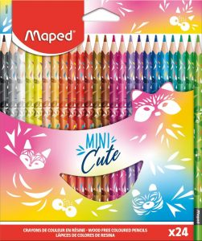
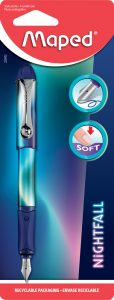
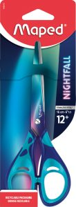
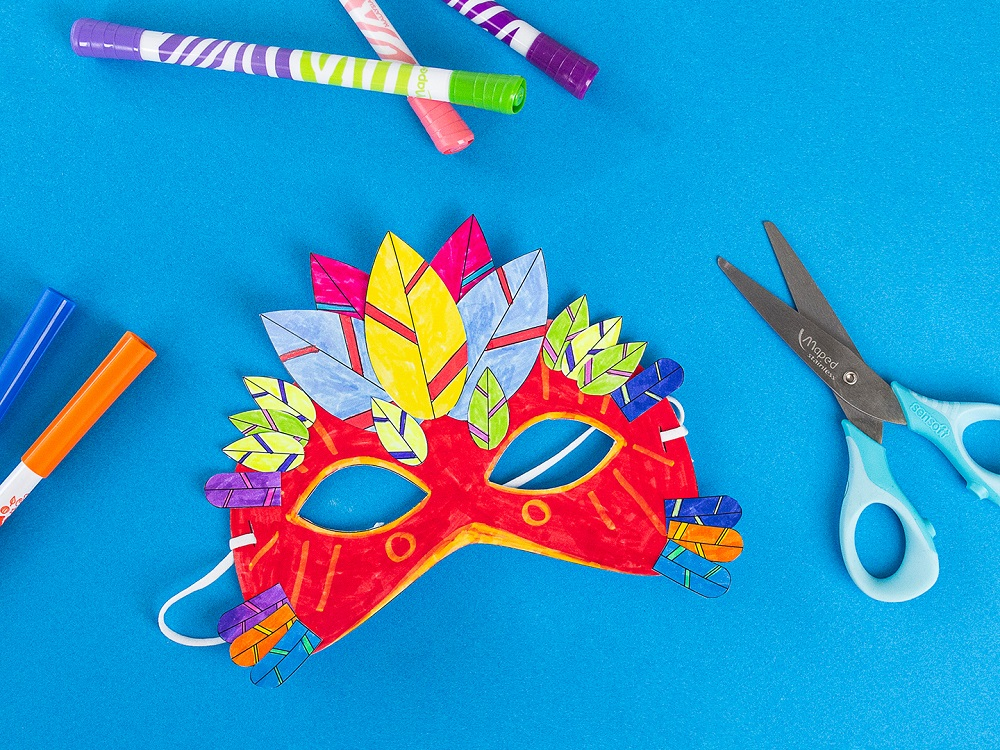
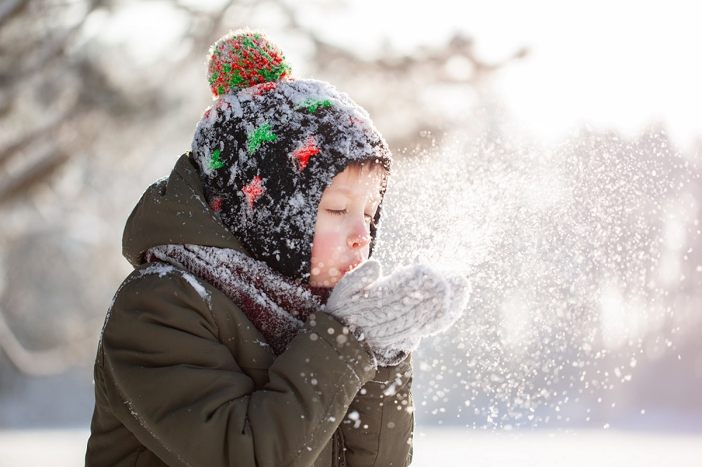

NOUVEAUTES DU MOMANT

24 CRAYONS DE COULEUR MINI CUTE
Pack de 24 crayons de couleur Mini Cute aux couleurs vives. Prise en main confortable et mines résistantes.
VOIR LE PRODUIT

12FEUTRES DE COLORIAGE MINI CUTE
Pack de 12 feutres Mini Cute avec pointe résistante et encre lavable.
VOIR LE PRODUIT

STYLO PLUME NIGHTFALL
Stylo plume rechargeable pour le collège lycées.Egronomique pour une écriture agréable.
VOIR LE PRODUIT

CISEAUX 16 CM NIGHTFALL
Ciseaux 16 cm au design tendance. L'indispensable au collège lycée !
VOIR LE PRODUIT
Ce mois-ci sur Mapiwee

Pack de 24 crayons de couleur Mini Cute aux couleurs vives. Prise en main confortable et mines résistantes.
LIRE L'ARTICLE
Pack de 12 feutres Mini Cute avec pointe résistante et encre lavable.
LIRE L'ARTICLE

STYLO PLUME NIGHTFALL
Stylo plume rechargeable pour le collège lycées.Egronomique pour une écriture agréable.